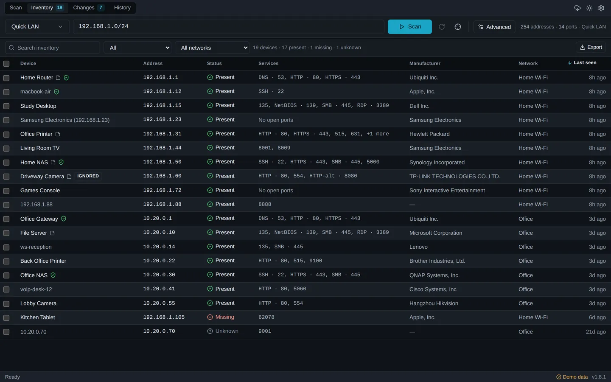
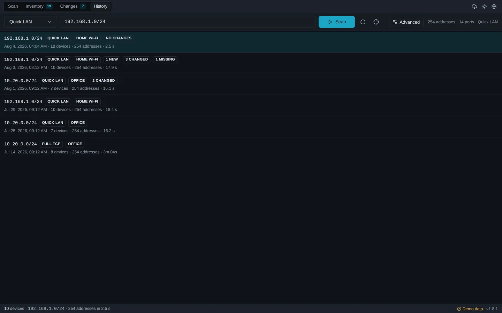

Keep an inventory, not just a scan
Every device ArcScan has ever found stays in one list, with its IP address, MAC address, manufacturer, hostname, open services, the addresses it used to hold, when it was first seen and how many scans have seen it.
ArcScan for Windows and macOS
Scan a network once, then keep a clear inventory of the devices ArcScan has discovered and the changes found in later scans. Names, notes and history stay with each device across scans, on your own computer. No account, no cloud service, no subscription.
v1.8.4 What changed in 1.8.4

Everything runs locally in an interface designed for reading a network: dense rows, real keyboard navigation, and equal attention to the light and dark themes. Four views, and no dashboard to configure.

ArcScan answers the questions that come up when something on a network is wrong, or when you have just taken over a network you did not build.
Every device ArcScan has ever found stays in one list, with its IP address, MAC address, manufacturer, hostname, open services, the addresses it used to hold, when it was first seen and how many scans have seen it.
A device is present when the latest completed scan found it, missing when that scan looked and did not, and unknown when no completed scan can say. ArcScan is not continuous monitoring, so it does not claim to know more than a scan can tell it.
New devices, devices that have gone missing, address changes, hostname and manufacturer changes, and services that opened or closed. Review, trust, rename, ignore or acknowledge each one, and it stays on record either way.
Search names, addresses, previous addresses, MACs, manufacturers, services and your own notes. Filter by presence or by what you have marked trusted or ignored, and export the inventory or the changes as CSV, JSON or XML.
Open a device's web interface, its SMB shares, an SSH session or a Remote Desktop connection straight from the inventory, or send a Wake-on-LAN packet. Only the actions the open services support are enabled.
The inventory, the changes, your device names and your notes live in a SQLite file on your own computer. Nothing is uploaded, and there is no account to create.
ArcScan recognises the network it is scanning and keeps each one's devices apart, even when two of them use the same private addresses. Give them names if it helps. With a single network, the extra controls stay out of the way.
ARP-assisted discovery finds printers, phones, access points, cameras and firewalled hosts that ignore ICMP entirely, and a second confirmation pass keeps results consistent from one scan to the next.
Five profiles, from a quick sweep to a full port range, plus your own ports, timeout and all three concurrency limits. ArcScan shows the workload before it starts and stops the moment you ask, keeping what it found.
Changes
ArcScan compares each scan with the most recent earlier completed scan that checked the same target with the same ports. Devices are matched by MAC address first, then by hostname and manufacturer, so a new DHCP lease shows up as a device that changed address rather than as one device vanishing and another appearing.
Every change is kept, not just the last one. The Changes list carries what happened, to which device, on which network and when, with the old and new values, and each entry stays until you review it. Trust a new device, rename it, ignore one whose changes are not worth reading, or acknowledge it and move on.
3 changes waiting to be reviewed
Living Room TV New device
192.168.1.44 · Samsung Electronics · Home Wi-Fi First seen in this scan
Office Printer Changed
Address change 192.168.1.28→192.168.1.31 Opened: HTTPS · 443
Kitchen Tablet Missing
192.168.1.105 · last seen 6 days ago Did not answer the latest completed scan
Three steps, with nothing hidden in between.
It detects the subnet this computer is on and fills it in for you. You can also enter any single IPv4 address, a dashed range such as 10.0.0.1-50, or a CIDR block such as 192.168.1.0/24.
An ICMP echo request and TCP connection attempts on the profile's ports, then a read of your computer's own ARP table to catch devices that answer neither. Nothing else is sent.
Devices are folded into a local inventory keyed by MAC address and scoped to the network they were seen on, and the scan is compared with the most recent earlier completed scan that covered the same target with the same ports.
No password is ever attempted. No exploit is ever sent. No scan result, device name or note leaves your computer. There is no stealth or evasion behaviour, because ArcScan is a network administration tool and nothing else.
Only scan networks you own or have been authorised to inspect. Scanning someone else's network without permission may be unlawful where you are.
It is built for the everyday work of knowing a network, not for formal assessment or round-the-clock monitoring.
A plain capability comparison against the two kinds of tool people usually weigh ArcScan against.
| Capability | ArcScan | Traditional IP scanner | Cloud network monitor |
|---|---|---|---|
| One-click local scanning | Yes | Usually | Sometimes |
| Persistent device history | Yes | Limited | Yes |
| Change detection between scans | Yes | Limited | Yes |
| Account required | No | No | Usually |
| Cloud dependency | No | No | Yes |
| Subscription | No | No | Usually |
| Direct device actions | Yes | Often | Varies |
| Data stored locally | Yes | Yes | Usually not |
| Runs on Windows and macOS | Yes | Varies | Browser based |
| Continuous monitoring and alerting | No | No | Yes |
The last row is where a cloud monitor genuinely wins. ArcScan runs a scan when you ask it to and compares it with the last one; it does not watch a network around the clock or send alerts. If that is what you need, ArcScan is not a replacement for it.
New in 1.8.4
1.8.4 adds a Windows Portable edition for x64 and ARM64: unzip it to a folder or a USB drive and run it, with no installer and no administrator rights. It is a separate build rather than the installer’s executable in a ZIP, and it keeps ArcScan’s own data with that copy of ArcScan. Everything the scanner does is unchanged. What’s new in 1.8.4
ArcScan-owned persistent data stays in an ArcScanData folder beside the
portable app: the scan history, the inventory, the names, the notes, and the
settings too, not just the database. Move the folder to another drive or another
machine and all of it comes with you. Settings names the exact path.
Installed and portable ArcScan can live on one computer without either knowing about the other, and so can two portable folders. Separate databases, separate settings, nothing merged in either direction. Two copies running out of the same portable folder is refused rather than allowed to corrupt it.
If the folder cannot be written to, or is on a network share, portable ArcScan says so and stops instead of quietly using the normal Windows application-data location. Updating is a deliberate manual replacement of the application files; the installed edition’s automatic updater is unchanged.

Installers are published on GitHub Releases and downloaded directly from there, so this site never re-hosts a binary.
Every link above points at the latest release. Exact file sizes are filled in from the GitHub API when it is reachable.
The installer is the right choice for a computer you use regularly. It puts ArcScan in the Start menu and keeps itself up to date.
The Portable ZIP runs ArcScan without installing it. ArcScan-owned
persistent data stays in an ArcScanData folder beside the portable app,
making it suitable for a USB drive or a technician toolkit. Extract the ZIP before
running ArcScan. Portable copies are updated by hand: download the newer ZIP,
replace the application files, and keep the ArcScanData folder. It
needs the Microsoft Edge WebView2 Runtime, which current Windows already has.
Installed and portable ArcScan are independent. They keep separate databases and separate settings, nothing is merged in either direction, and both can be used on the same computer. Portable ArcScan is Windows only. What’s new in 1.8.4
ArcScan is not code-signed with a paid publisher certificate, and the macOS builds are not notarised. Windows SmartScreen will show an unknown-publisher warning: choose More info, then Run anyway. On macOS, right-click the application and choose Open the first time.
Update packages are cryptographically signed with a minisign key, and ArcScan verifies that signature before installing an update. That protects the update path; it is not the same as publisher signing, and this page will say so until it is. Every release asset carries a SHA-256 digest on GitHub if you want to verify a download.

Open source
ArcScan is MIT licensed and the whole application is on GitHub, scanner included. If you want to know exactly what it sends and what it stores, you can read it rather than believe this page.
Issues and pull requests are welcome. The desktop application is the product, and downloading it is all most people need to do.
Yes. ArcScan is free and open source under the MIT license. There is no paid tier, no account and no subscription.
No. Scan results, the device inventory, your names and your notes are stored in a SQLite database on your own computer and are never sent anywhere.
ArcScan makes two optional outbound requests, both described on the privacy page: an update check against GitHub, which sends only the version being checked and can be switched off, and a public IP lookup that is off by default and only runs when you press the button.
No. Scanning uses ordinary operating system networking rather than raw sockets, so no elevation is needed to scan. The installer itself may ask for elevation to install for all users, like any application.
Windows 10 and Windows 11 on x64 and ARM64, and macOS 11 or later as a single universal build for both Apple Silicon and Intel.
Yes, with the Remote subnet profile, which uses ICMP and TCP discovery and makes no local ARP assumptions.
Discovery is less complete on a routed network. MAC addresses and manufacturers are only visible on your own segment, and a device that drops every probe cannot be found from the other side of a router.
Some devices ignore ICMP and have no open ports at all. Sleeping Wi-Fi devices answer slowly. Access points with client isolation stop one device reaching another.
Try the Reliable LAN profile, which waits longer, probes a wider port set, and re-triggers ARP resolution for addresses that did not answer the first time. That pass is what makes results consistent between scans.
Quick LAN sweeps your subnet with a short timeout and the common service ports, which is enough for a routine look at what is connected.
Reliable LAN uses longer timeouts, a gentler sweep and a wider port set covering printing, casting, streaming and management services. It finds phones, printers and IoT equipment that miss the first pass, and takes longer in exchange.
Yes. It attempts a TCP connection to the ports the selected profile covers and reports which ones accepted. You can set your own list and ranges, up to 2,048 ports per scan, and ArcScan shows the total number of connection attempts before it starts.
No. ArcScan performs read-only discovery. It never attempts a password, never sends an exploit, and makes no assessment of whether a service is vulnerable. It tells you what is reachable, which is a different and more basic question.
They describe what the latest completed scan of that network found, not what is happening right now. Present means that scan saw the device. Missing means it did not, and an earlier completed scan with the same target and ports did, so it looked where the device used to be. Unknown means no completed scan can say: the network has only been scanned partially, or the device has only ever been seen under different coverage. ArcScan is not continuous monitoring, so it never claims a device is online or offline.
Yes. Every device ArcScan finds is kept in a persistent inventory with the name you give it, your notes, the addresses it has held, when it was first seen and how many scans have seen it. Devices are matched by MAC address where one is visible, so a new DHCP lease does not create a duplicate. Deleting a scan from the history does not remove devices from the inventory.
Yes. Every scan is compared with the most recent earlier completed scan that covered the same target with the same ports, and ArcScan reports new devices, devices that have gone missing, IP address changes, hostname and manufacturer changes, and ports that opened or closed.
Devices are matched by MAC address first, so a DHCP lease change is reported as a changed device rather than as a new one. A scan you stopped early is never compared, since it did not check every address.
Everything found so far is kept and saved, and the scan appears in history labelled a partial scan with the number of addresses it managed to check. You can open it, read it and export it like any other scan.
What it will not do is report changes. A device it never reached is not necessarily gone, and a port it never probed is not necessarily closed, so ArcScan says why the comparison is unavailable rather than showing one that could be wrong. The next completed scan compares against the last completed scan instead.
Not yet. The installers are not signed with a paid publisher certificate and the macOS builds are not notarised, so Windows SmartScreen and macOS Gatekeeper will warn on first launch.
Update packages are cryptographically signed with a minisign key that the application verifies before installing. That protects the update path but is not the same as publisher signing. GitHub records a SHA-256 digest for every release asset, which you can check against a file you have downloaded.
Yes. The MIT license permits commercial use and there is no per-seat or per-device charge. Only scan networks you own or are authorised to inspect.
No. ArcScan discovers IPv4 hosts only. Targets are single IPv4 addresses, dashed IPv4 ranges or IPv4 CIDR blocks. IPv6 discovery is not implemented, and this page will not claim otherwise until it is.
Free and open source, for Windows and macOS. Your scan results never leave your computer.
Download ArcScan